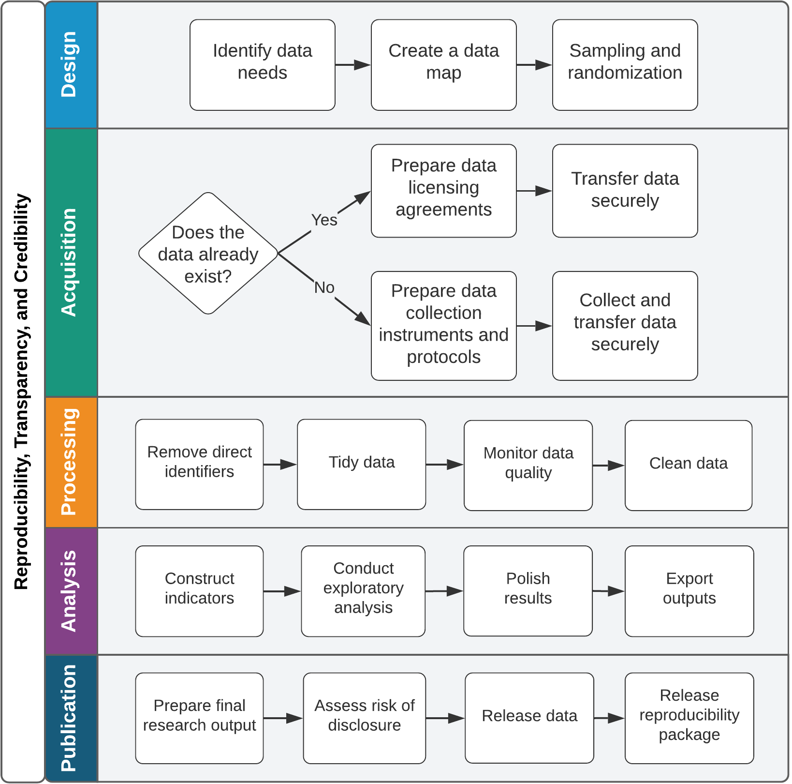

Introduction
Development Research in Practice: The DIME Analytics Data Handbook is intended to teach all users of development data how to handle data effectively, efficiently, and ethically. An empirical revolution has changed the face of development research over the last decade. Increasingly, researchers are working not just with complex data, but with original data—data sets collected by the research team itself or acquired through a unique agreement with a project partner. Research teams must carefully document how original data are created, handled, and analyzed. These tasks now contribute as much weight to the quality of the evidence as the research design and the statistical approaches do. At the same time, empirical research projects are expanding in scope and scale: more people are working on the same data over longer time frames. For that reason, the central premise of this book is that data work is a “social process,” which means that the many people on a team need to have the same ideas about what is to be done, when, where, and by whom so that they can collaborate effectively on a large, long-term research project.
Despite the growing importance of managing data work, little practical guidance is available for practitioners. There are few guides to the conventions, standards, and best practices that are fast becoming a necessity for empirical research. Development Research in Practice aims to fill that gap. It covers the full data workflow for a complex research project using original data, sharing the lessons, tools, and processes developed within the World Bank’s Development Impact Evaluation (DIME) department, and compiling them into a single narrative of best practices for data work. This book is not sector specific; it does not teach econometrics or how to design an impact evaluation. Many excellent resources address those topics. Instead, it teaches how to think about all aspects of research from a data perspective, how to structure research projects to ensure high-quality data, and how to institute transparent and reproducible workflows. Adopting these workflows may have significant up-front learning costs, but these investments pay off quickly, saving time and improving the quality of research going forward.
How to read this book
This book aims to be a highly practical resource so that readers can immediately begin to collaborate more effectively on large, long-term research projects using the methods and tools discussed. This introduction outlines the basic philosophies that motivate this book and the approach taken to research data. The central message is that research data work is primarily about communicating effectively within a team and that effective collaboration is enabled by standardization and simplification of data tasks. This book provides a narrative outline of the data workflow at each stage of an empirical research project, from design to publication, as visualized in figure I.1. Chapters 1 and 2 contextualize the workflow and set the stage for the hands-on data tasks described in detail in chapters 3 to 7.
FIGURE I.1 Overview of the tasks involved in development research data work

Source: DIME (Development Impact Evaluation), World Bank.
Chapter 1 outlines the principles and practices that help consumers of research to be confident in the conclusions reached and describes the three pillars of a high-quality empirical research project: credibility, transparency, and reproducibility. It presents three popular methods of committing to the use of particular research questions or methods, discusses how to apply principles of transparency to all research processes, and provides guidance on how to make research fully reproducible.
Chapter 2 teaches readers how to structure data work for collaborative research while ensuring the privacy and security of research participants. It discusses the importance of planning data work and associated tools in advance, long before any data are acquired. It also describes ethical concerns common to development data, common pitfalls in legal and practical management of data, and how to respect the rights of research participants at all stages of data work.
Chapter 3 turns to the measurement framework, describing how to translate research design into a data work plan. It details DIME’s data map template, a set of tools to communicate the project’s data requirements both across the team and across time. It also discusses how to implement random sampling and random assignment in a reproducible and credible manner.
Chapter 4 covers data acquisition. It starts with the legal and institutional frameworks for data ownership and licensing, examining the rights and responsibilities of using data collected by the research team or by others. It provides a deep dive on collecting high-quality primary electronic survey data, including developing and deploying survey instruments. Finally, it discusses how to handle data securely during transfer, sharing, and storage, because secure data handling is essential to protecting respondent privacy.
Chapter 5 describes data-processing tasks. It details how to construct “tidy” data at the appropriate units of analysis, how to ensure uniquely identified data sets, and how to incorporate data quality checks routinely into the workflow. It also provides guidance on the process of de-identifying and cleaning personally identifying data, focusing on how to understand and structure data in preparation for constructing indicators and performing analytical work.
Chapter 6 discusses data analysis tasks. It begins with data construction, which is the creation of new variables from the original data. It introduces core principles for writing analytical code and creating, exporting, and storing research outputs such as figures and tables reproducibly, using dynamic documents.
Chapter 7 outlines the publication of research outputs, including manuscripts, code, and data. It discusses how to collaborate effectively on technical writing using dynamic documents. It also covers how and why to publish data sets in an accessible, citable, and safe fashion. Finally, it provides guidelines for preparing functional and informative reproducibility packages that contain all of the code, data, and metadata needed for others to evaluate and reproduce the work.
Each chapter starts with a box summarizing the most important points, takeaways for different types of readers, and a list of key tools and resources for implementing the recommended practices. Each chapter provides an understanding of which tasks will be performed at every stage of the workflow and how to implement them according to best practices. Each also provides an understanding of how the various stages of the workflow tie together and what inputs and outputs are required and produced from each. The references and links contained in each chapter lead to detailed descriptions of individual ideas, tools, and processes that will be useful when implementing the tasks. Box I.1 describes the Demand for Safe Spaces project, which is the basis for the examples given throughout this handbook.
BOX I.1 THE DEMAND FOR SAFE SPACES CASE STUDY
A completed project, Demand for Safe Spaces: Avoiding Harassment and Stigma, is used to illustrate the empirical research tasks described throughout this handbook. Each chapter contains boxes with examples of how the practices and workflows described in it were applied in this real-life example. All of the examples of code and diagrams referenced in the case study can be accessed directly through this book’s GitHub repository. Minor adaptations were made to the original study materials for function and clarity. All of the original materials are included in the project’s reproducibility package. The Demand for Safe Spaces study is summarized in its abstract as follows:
What are the costs to women of harassment on public transit? This study randomizes the price of a women-reserved “safe space” in Rio de Janeiro and crowdsources information on 22,000 rides. Women in the public space experience harassment once a week. A fifth of riders are willing to forgo 20 percent of the fare to ride in the “safe space.” Randomly assigning riders to the “safe space” reduces physical harassment by 50 percent, implying a cost of $1.45 per incident. Implicit association tests show that women face a stigma for riding in the public space that may outweigh the benefits of the safe space.
The Demand for Safe Spaces study used novel original data from three sources. It collected information on 22,000 metro rides from a crowdsourcing app (referred to as crowdsourced ride data in the case study examples), a survey of randomly sampled commuters on the platform (referred to as the platform survey), and data from an implicit association test. The research team first elicited revealed preferences for the women-reserved cars and then randomly assigned riders across the reserved and nonreserved cars to measure differences in the incidence of harassment. Researchers used a customized app to assign data collection tasks and to vary assigned ride spaces (women-reserved cars vs. public cars) and the associated payout across rides. In addition, the team administered social norm surveys and implicit association tests on a random sample of men and women commuters to document a potential side effect of reserved spaces: stigma against women who choose to ride in the public space.
This handbook focuses on the protocols, methods, and data used in the Demand for Safe Spaces study rather than on the results. A working paper by Kondylis et al. (2020) provides more information about the findings from this study and how it was conducted.
For materials for all of the examples in the book, see https://github.com/worldbank/dime-data-handbook/tree/main/code. For access to the Demand for Safe Spaces study repository, see https://github.com/worldbank/rio-safe-space. For the working paper, see https://openknowledge.worldbank.org/handle/10986/33853.
The DIME Wiki: A complementary resource
The handbook contains many references to the DIME Wiki, a free online collection of impact evaluation resources and best practices. This handbook and the DIME Wiki are meant to go hand in hand: the handbook provides the narrative structure and workflow, and the DIME Wiki offers specific implementation details, detailed code examples, and a more exhaustive set of references for each topic. The DIME Wiki is a living resource that is continuously updated and improved, both by the authors of this book and by external contributors. All readers are welcome to register as DIME Wiki users and contribute directly to it at https://dimewiki.worldbank.org.
Standardizing data work
In the past, data work was often treated as a “black box” in research. A published manuscript might exhaustively detail research designs, estimation strategies, and theoretical frameworks, but typically reserved very little space for detailed descriptions of how data were collected and handled. It is almost impossible to assess the quality of the data in such a paper and whether the results could be reproduced. This situation is changing, in part because more publishers and funders are requiring researchers to release their code and data (Swanson et al. (2020)).
Handling data and producing documentation are key skills for researchers and research staff. Standard data processes and documentation practices are important throughout the research process to convey and implement the intended research design accurately (Vilhuber (2020)) and to minimize security risks: better protocols and processes lower the probability of data leakages, security breaches, and loss of personal information. When data work has been done in an ad hoc manner, it is very difficult for others to understand what has been done—readers simply have to trust that the researchers have performed these tasks correctly. Most important, if any part of the data pipeline breaks down, research results become unreliable (McCullough, McGeary, and Harrison (2008)) and cannot be accepted at face value according to the intended research design (Goldstein 2016). Because “laboratory” settings almost never exist in this type of research, such a failure has a very high cost (for an example, see Baldwin and Mvukiyehe (2015)): failure wastes the investments made in knowledge generation and wastes the research opportunity itself (Camerer et al. (2016)).
Accurate and reproducible data management and analysis are essential to the success and credibility of modern research. Data-handling processes need to be standardized and documented for the data work to be evaluated and understood alongside any final research outputs. Process standardization is an important component of this effort. Process standardization is an agreement within a research team about how all tasks of a specific type will be approached. It means that there is little ambiguity about how something ought to be done and therefore that the tools to do it can be set in advance. Standard processes help other people to understand the work and make the work easier to document. Process standardization and documentation allow readers of code to (1) understand quickly what a particular process or output is supposed to be doing, (2) evaluate whether or not it does that task correctly, and (3) modify it either to test alternative hypotheses or to adapt it in their own work. This book discusses specific standards recommended by DIME Analytics, but the goal is to convince readers to discuss the adoption of a standard within research teams rather than necessarily to use the particular standards recommended here.
Standardizing coding practices
Modern quantitative research relies heavily on statistical software tools, written with various coding languages, to standardize analytical work. Outputs like regression tables and data visualizations are created using code in statistical software for two primary reasons. Using a standard command or package ensures that the work is done right and that the procedure can be confirmed or checked using the same data at a later date or implemented again using different data. Keeping a clear, human-readable record of these code and data structures is critical. Although it is often possible to perform nearly all of the relevant tasks through an interactive user interface or even through software such as Excel, this practice is strongly discouraged. In the context of statistical analysis, the practice of writing all work using standard code is widely accepted. To support this practice, DIME now maintains portfolio-wide standards about how analytical code should be maintained and made accessible before, during, and after release or publication.
Over the last few years, DIME has extended the same principles to preparing data for analysis, which often constitutes just as much (or more) of the manipulation done to data over the life cycle of a research project. This book encourages research teams to think about the tools and processes they use for designing, collecting, and handling data just as they do for conducting analysis. To this end, DIME Analytics has contributed tools and standard practices for implementing these tasks using statistical software.
Although most researchers do nearly all data work using code, many come from economics and statistics backgrounds rather than computer science backgrounds, and they often understand code to be a means to an end rather than an output itself. This attitude needs to change: in particular, development practitioners must think about their code and programming workflows just as methodically as they think about their research workflows; they need to think of code and data as research outputs, similar to manuscripts and briefs.
This approach arises because code is the “recipe” for the analysis. The code tells others exactly what was done, explains how they can do it again in the future, and provides a road map and knowledge base for further original work (Hamermesh (2007)). Performing tasks through written code creates a record of every task performed (Ozier (2019)). It also prevents direct interaction with the data files that could lead to nonreproducible processes (Chang and Li (2015)). DIME Analytics has invested a lot of time in developing code as a learning tool: the examples written and the commands provided in this book are designed to provide a framework for common practice, so that everyone working on these tasks in DIME is able to read, review, and provide feedback on the work of others, starting from the same basic ideas about how various tasks are done.
Most specific code tools have a learning and adaptation process, meaning that researchers will become most comfortable with each tool only by using it in the real world. To support the process of learning to create and use reproducible tools and workflows, this handbook references free and open-source tools wherever possible and points to more detailed instructions when relevant. Stata, a proprietary software, is the notable exception because of its persistent popularity in development economics and econometrics (StataCorp 2021). Appendix A presents two guides: the DIME Analytics Coding Guide , which provides instructions on how to write good code and how to use the examples of code in this book, and the DIME Analytics Stata Style Guide. DIME project teams are strongly encouraged to adopt and follow coding style guides explicitly in their work. Style guides harmonize code practices within and across teams, making it easier to understand and reuse code, which ultimately helps teams to build on each other’s best practices. Some of the programming languages used at DIME already have well-established and commonly used style guides, such as the Tidyverse Style Guide for R and PEP-8 for Python (see van Rossum, Warsaw, and Coghlan 2013; Wickham, n.d.). Relatively few resources of this type are available for Stata, which is why DIME Analytics has created and included one here. For the complete DIME Analytics Coding Standards, see the GitHub repository at https://github.com/worldbank/dime-standards.
The team behind this book
DIME generates high-quality, operationally relevant data and research to transform development policy and support the World Bank’s mission of reducing extreme poverty and securing shared prosperity (Legovini, Di Maro, and Piza (2015)). DIME develops customized data and evidence ecosystems to produce actionable information and recommend specific policy pathways to maximize impact. DIME conducts research in 60 countries with 200 agencies, leveraging a US$180 million research budget to shape the design and implementation of US$18 billion in development finance. DIME also provides advisory services to 30 multilateral and bilateral development agencies (Legovini et al. (2019)). DIME research is organized into four primary topics: economic transformation and growth; gender, economic opportunity, and fragility; governance and institution building; and infrastructure and climate change. Over the years, DIME has employed dozens of research economists and hundreds of full-time research assistants, field coordinators, and other staff. The team has conducted more than 325 impact evaluations. Development Research in Practice takes advantage of the concentration and scale of this research to synthesize many resources for data collection and research and make DIME tools available to the larger community of development researchers. (For more information, see https://www.worldbank.org/en/research/dime.)
As part of its broader mission, DIME invests in public goods to improve the quality and reproducibility of development research around the world. DIME Analytics, the team responsible for writing and maintaining this book, is a centralized unit that develops and ensures the adoption of high-quality research practices across the DIME portfolio. It works through an intensive, collaborative innovation cycle: DIME Analytics trains and supports research assistants and field coordinators, provides standard tools and workflows to all teams, delivers hands-on support when new tasks or challenges arise, and then develops and integrates lessons from those engagements to bring to the full team. Resources developed and tested in DIME are converted into public goods for the global research community through open-access trainings and open-source tools. Appendix B, the DIME Analytics resource directory, provides an introduction to public materials.
DIME Analytics has devoted many hours to learning from data work across DIME’s portfolio, identifying inefficiencies and barriers to success, developing tools and trainings, and standardizing best-practice workflows adopted in DIME projects. It has invested significant energy in the language and materials used to teach these workflows to new team members and, in many cases, in software tools that support these workflows explicitly. DIME team members often work on diverse portfolios of projects with a wide range of teammates and have found that standardizing core processes across all projects results in higher-quality work, with fewer opportunities to make mistakes. In that way, the DIME Analytics team has institutionalized, developed, and refined tools and practices over time and given the department a common base of knowledge and practice. In 2018, for example, DIME adopted universal reproducibility checks for publications; the lessons from this practice helped to move the DIME team from having 50 percent of the papers assessed for reproducibility in 2018 require significant revision to having 64 percent of the papers submitted in 2019 pass without any revision.
Looking ahead
Although adopting the workflows and mind-sets described in this book requires an up-front cost, it will save research teams a lot of time and hassle very quickly. In part this is because readers will learn how to implement essential practices directly, in part because they will find new tools for more advanced practices, and, most important, because they will acquire the mind-set of doing research with a focus on high-quality data. Some readers may find the number of new tools and practices recommended in this book to be daunting (see figure I.1). The experience at DIME has shown that full-scale adoption is possible; in the last few years, the full DIME portfolio has transitioned to transparent and reproducible workflows, with a fair share of hiccups along the way. The authors of this book were involved in supporting that at-scale transition and hope that, by sharing the resources and lessons learned, the learning curve for readers will be less steep. The summary boxes at the beginning of each chapter provide a list of the key tools and resources to help readers to prioritize. The handbook also offers “second-best” practices in many cases, suggesting easy-to-implement ways to increase transparency and reproducibility in cases when full-scale adoption of the recommended workflow is not immediately feasible. In fact, teams are encouraged to adopt one new practice at a time rather than to rebuild their whole workflow from scratch right away. It is hoped that, by the end of the book, all readers will have learned how to handle data more efficiently, effectively, and ethically at all stages of the research process.